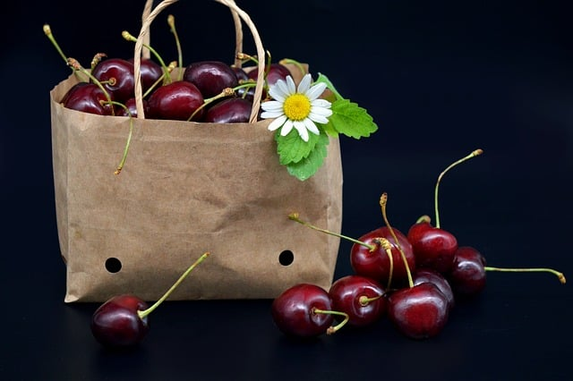
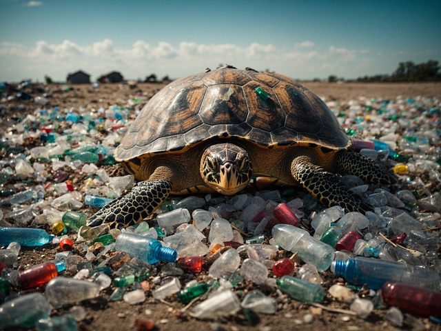
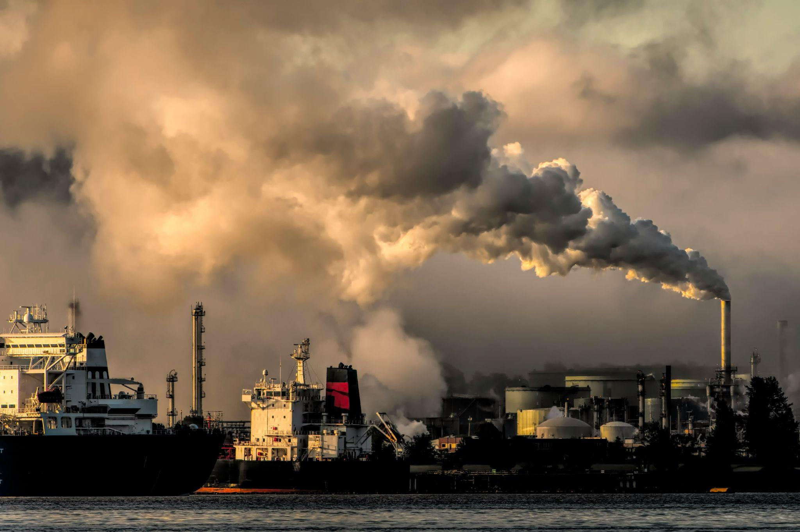

Empowering Humanity: How Islamic Relief is Changing Lives Insight into the multifaceted humanitarian work undertaken by Islamic Relief. The importance of sustainable development in breaking the cycle of poverty. The critical role of community engagement and...... READ MORE->
Introduction to Intelligent Power Management The urgency to reconsider our energy consumption and render it more sustainable has never been greater than it is today. As climate change advances and natural resources become scarcer, attention..... READ MORE->
How to Reduce Packaging Waste  It’s no secret that pollution and waste are big problems in today’s world. All those mountains of packaging waste? They’re a huge burden on our planet. But we can change..... READ MORE->
Carbon Offsetting: Exploring Opportunities and Challenges for Businesses In the wake of increasing environmental concerns and the urgent need for climate action, carbon offsetting has emerged as a crucial strategy for businesses to mitigate their carbon footprint. This..... READ MORE->
Plastic Pollution’s Impact on Marine Life and Our Role in Conservation  Our oceans, teeming with life, are under siege by a silent threat – plastic pollution. Millions of tons of plastic waste enter the marine environment every year, wreaking havoc on..... READ MORE->
The Perils of Neglecting Flue Gas Cleaning Systems: Understanding the Risks  Flue gas cleaning removes contaminants like sulfur dioxide (SO2), nitrogen oxides (NOx), carbon monoxide, VOCs, heavy metals, and particulate matter from flue gas. Flue gas cleaning solutions are just as..... READ MORE->
Innovative Waste-To-Energy Solutions For Cleaner Cities As cities around the globe strive for more sustainable futures, the challenge of managing waste while reducing environmental impact has become increasingly critical. Innovative waste-to-energy (WTE) technologies offer a promising..... READ MORE->